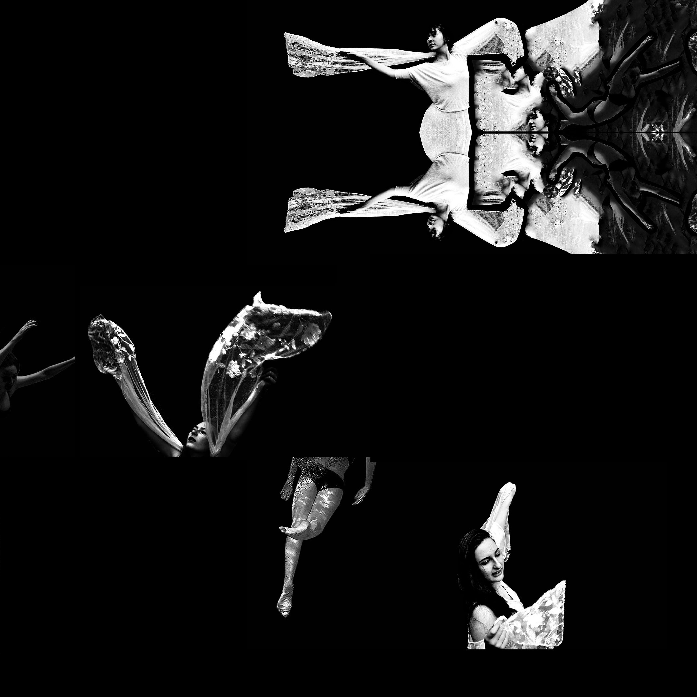

oh by the by
has anybody seen
little you-i
who stood on green
hill and threw
his wish at blue
with a swoop and a dart
out flew his wish
(it dived like a fish
but it climbed like a dream)
throbbing like a heart
singing like a flame
blue took it my
far beyond far
and high beyond high
bluer took it your
but bluest took it our
away beyond where
what a wonderful thing
is the end of a string
(murmurs little you-i
as the hill becomes nil)
and will somebody tell
me why people let go